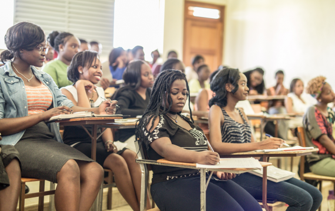
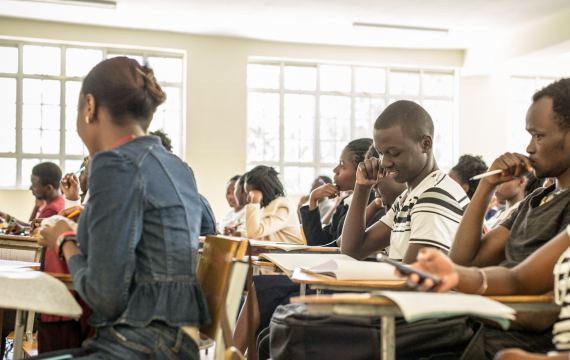
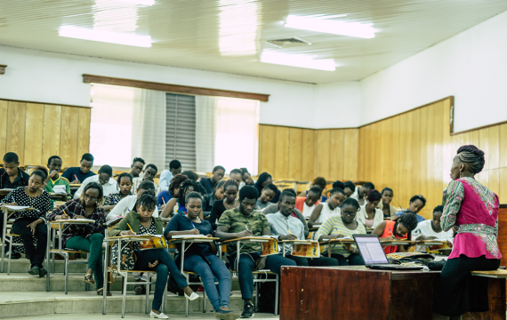
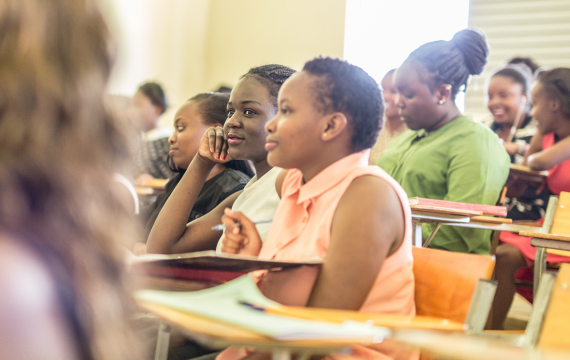
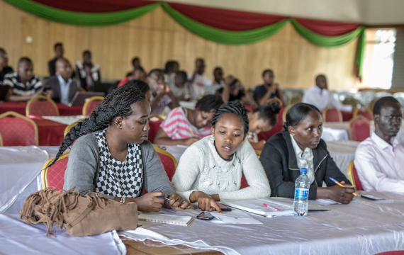
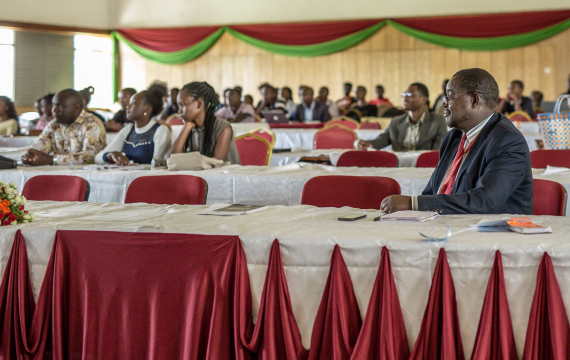

The School of Science Engineering and Technology offers interdisciplinary undergraduate programs in Computer Science, Chemistry, Physics, Mathematics, Biology, and Technology related courses.Besides offering its own programs, the School also services courses offered in other Schools.
These include general mathematics for non-science students as well as introductory computer courses for all students in the university.
Besides offering its own programs, the School also services courses offered in other Schools.
These include general mathematics for non-science students as well as introductory computer courses for all students in the university. For more information on these programmes, please visit their individual links.
The School is committed to offering competitive market-driven courses to ensure employability of our graduates. Approximately 90% of our graduates have already secured jobs, with a very good number of them gaining promotions shortly after starting work. Most of our graduates secure these jobs before they finish their degree programmes, during their internship periods.
As part of its strategic development plan, the School of SSET has embraced the Government of Kenya’s long-term national development vision known as the Vision 2030 as its main focus. As we all know, Science and Technology, specifically ICT, has been identified as a key pillar that will help achieve the Vision 2030 and in so doing help make Kenya a thriving middle class economy and greatly lift the living standards of Kenyans.
Dr. Peter Rugiri
Dean, School of Science, Engineering
and Technology
To become a modern, locally and internationally recognized, centre of excellence in teaching and research in ICT and applied sciences.
Department of Computer Science & Information Technology
Welcome to the department of Computer Science & Information Technology. Our courses are tailored to meet new and rising demands of IT professional. We regularly review our courses to cater for emerging technological trends in IT and computer technology applications. Our primary goal as a department is to produce IT professionals who are ethical, highly skilled and flexible to work
in basically all IT fields and to adjust swiftly to any future changes in the technology
Department of Computer Science & Information Technology
Welcome to the department of Computer Science & Information Technology. Our courses are tailored to meet new and rising demands of IT professional. We regularly review our courses to cater for emerging technological trends in IT and computer technology applications. Our primary goal as a department is to produce IT professionals who are ethical, highly skilled and flexible to work
in basically all IT fields and to adjust swiftly to any future changes in the technology
Department of Biological & Physical Sciences
Welcome to the department of Computer Science & Information Technology. Our courses are tailored to meet new and rising demands of IT professional. We regularly review our courses to cater for emerging technological trends in IT and computer technology applications. Our primary goal as a department is to produce IT professionals who are ethical, highly skilled and flexible to work
in basically all IT fields and to adjust swiftly to any future changes in the technology
Gallery






UNIVERSITY PORTALS
Staff Portal
Students Portal
Kabu Repository
Library Catalog
LATEST NEWS
TWO KABARAK UNIVERSITY ENTERPRISE LTD STAFF RECOVER FROM COVID-19
CALL FOR PAPERS – ANNUAL KABARAK UNIVERSITY INTERNATIONAL CONFERENCE 2020
Inter University transfer Instructions